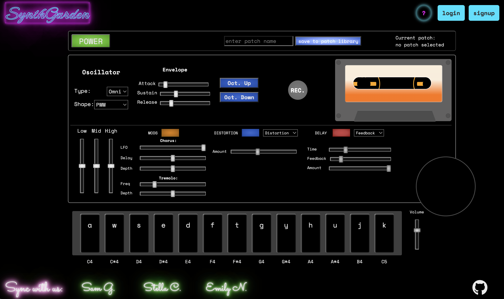

stella is a software engineer.
web →


ice cream ⚠️ three.js, express
no context ⚠️ typescript, express
bikes, beats, and brews typescript, next
BEAT C♡NNECTI♡N js, globe.gl
synthgarden mern, tone.js

My Aunt's Kimchi Rules p5.js
MOODES chrome extension, js
birthday invite p5.js
research →
social media and rainfall thesis, python
potential vorticity anomalies funded NSF proposal
Argentine weather service fieldwork, Tinker fellowship
atmospheric motions physics today
nasa satellite bias geophysical research letters